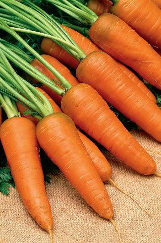

Carrot Cultivation Guide

1. Land Preparation
Deep plowing and fine tilth are necessary for proper root development.
Ensure soil is well-drained and sandy-loam in nature.
Apply FYM (10–15 tons/acre) during land preparation.
2. Sowing & Seed Rate
Sow seeds directly into the field during cool seasons (October–January).
Seed rate: 2–3 kg per acre.
Spacing: 30 cm between rows and 7–10 cm between plants.
3. Water Management
Irrigate after sowing and maintain soil moisture during root development.
Avoid water stagnation to prevent root rot.
Watering frequency: Every 7–10 days based on soil moisture.
4. Fertilization Schedule
Basal Dose: Urea (20–25 kg), DAP (30 kg), MOP (20 kg), FYM (10–15 tons).
Top dressing with Nitrogen (Urea) at 30 days after sowing.
5. Weed & Pest Management
Weed manually 2–3 times or use pre-emergent herbicides if needed.
Pests: Root maggots — manage with neem oil sprays or insecticides.
Diseases: Powdery mildew, Alternaria — treat with appropriate fungicides.
6. Investment Breakdown (Per Acre)
Input
Estimated Cost (INR)
Seeds
₹1,200 – ₹1,800
Fertilizers & FYM
₹2,500 – ₹3,500
Pesticides/Fungicides
₹1,500 – ₹2,000
Labor & Irrigation
₹4,000 – ₹7,000
Total Investment
₹9,500 – ₹14,300 per acre
7. Harvesting & Yield
Harvest 90–110 days after sowing when roots are uniform in size and color.
Expected yield: 80–100 quintals per acre.
8. Market Rate & Profit Estimation
Average market price: ₹1,200 – ₹2,500 per quintal.
Gross returns: ₹96,000 – ₹2,50,000 per acre.
Net profit: ₹80,000 – ₹2,30,000 per acre.